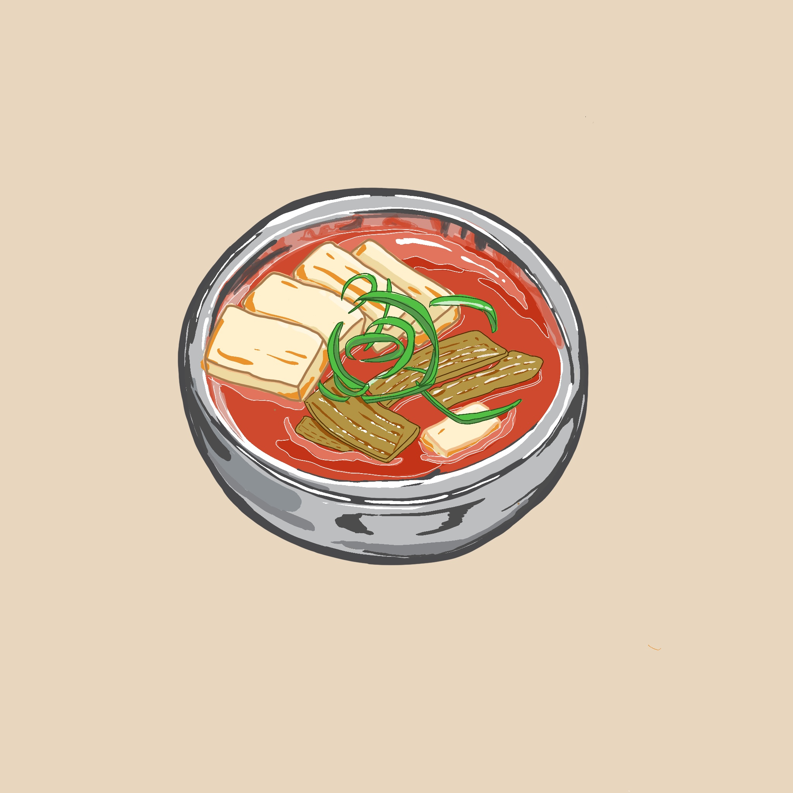
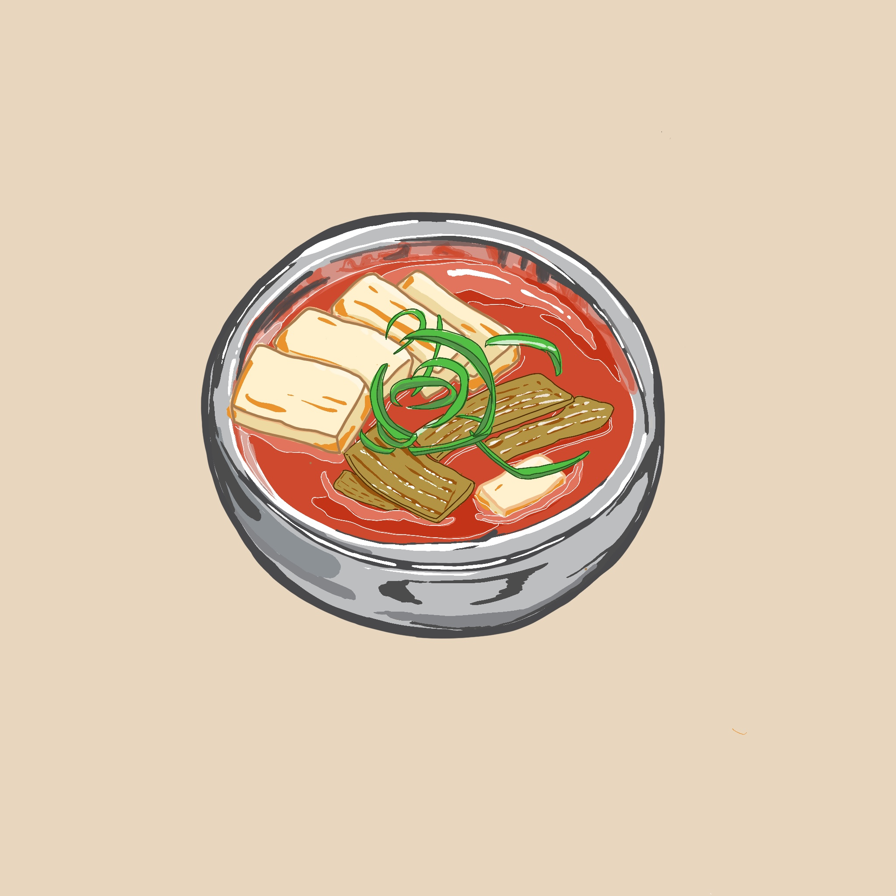

Mandu - Kimchi Stew
03 Apr 2020
Some description about kimchi stew
Mandu has started a staff relief gofundme for there restaurant staff and workers. You can access the link here to help them out.

Some description about kimchi stew
Mandu has started a staff relief gofundme for there restaurant staff and workers. You can access the link here to help them out.